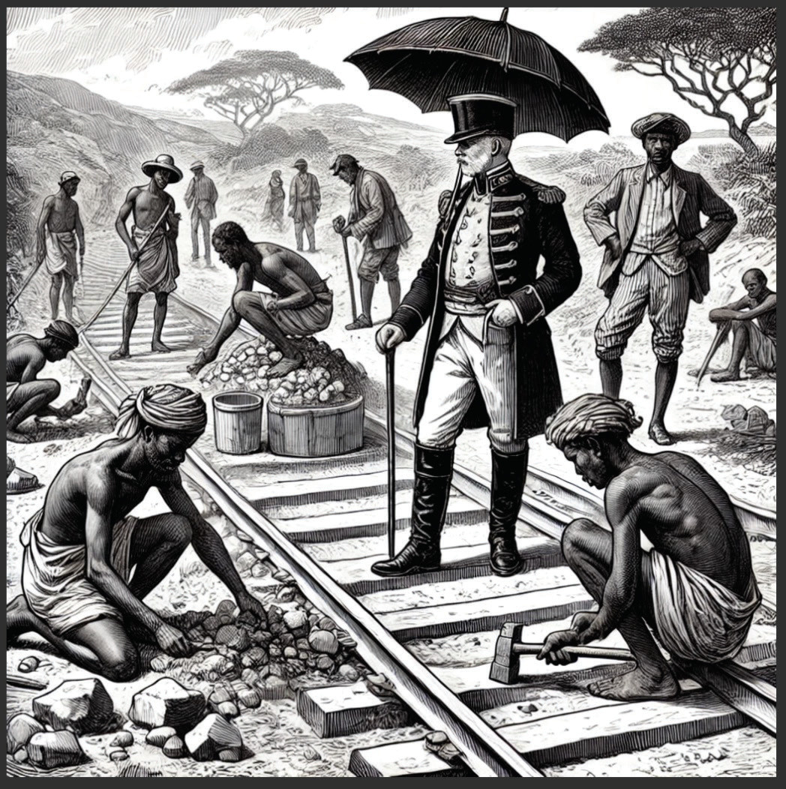

Uchumi wa kikoloni katika utawala wa Kijerumani
Madhumuni ya uvamizi wa Wajerumani yalikuwa kujinufaisha kiuchumi. Walilenga kupata masoko ya bidhaa zao za viwandani kama vile nguo, bunduki, mvinyo na vyombo vya nyumbani. Vilevile, walitaka kupata malighafi kwa gharama nafuu. Bidhaa walizochukua kama malighafi kutoka Afrika Mashariki ya Wajerumani ni ngozi, mpira, nta, asali, pembe za ndovu, almasi na dhahabu.
Mwaka 1890 Wajerumani walianza kujenga njia za uchukuzi na mawasiliano chini ya idara ya ujenzi ambapo Bandari za Tanga na Dar es Salaam zilianza kujengwa. Reli ya Tanga hadi Moshi ilijengwa kuanzia mwaka 1893 hadi 1911. Pia, Reli ya Kati kutoka Dar es Salaam hadi Kigoma ilijengwa kuanzia mwaka 1905 hadi 1914. Kielelezo namba 3 kinaonesha ujenzi wa reli wakati wa ukoloni.
